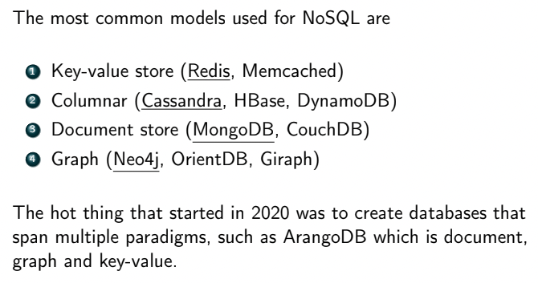
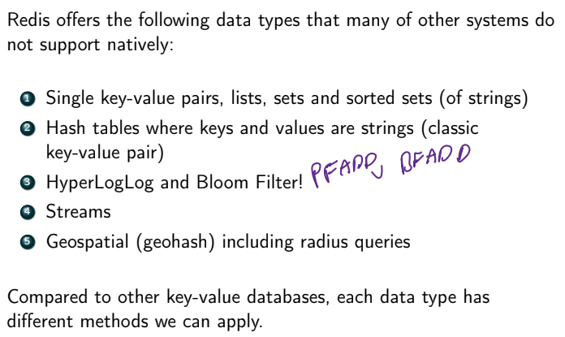
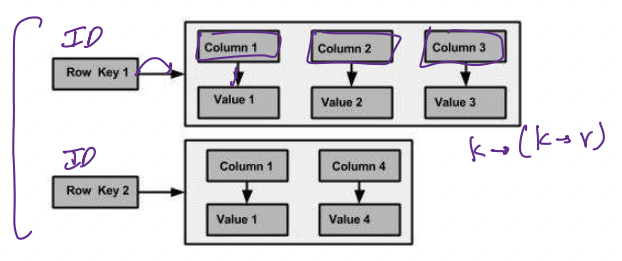
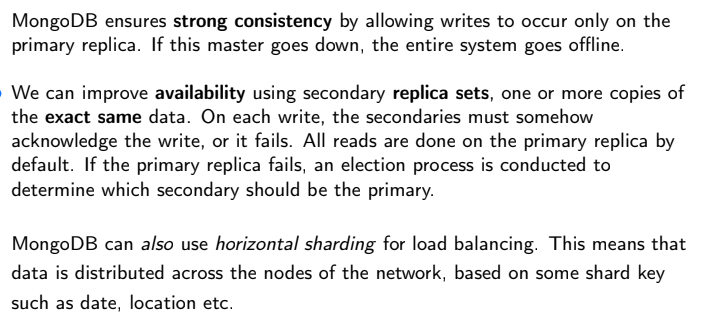
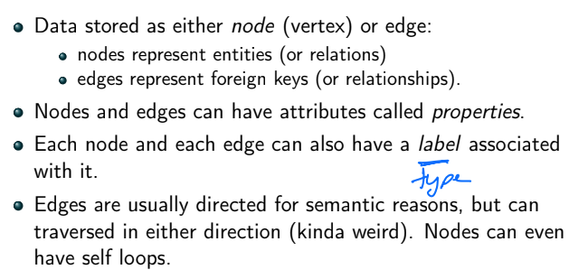
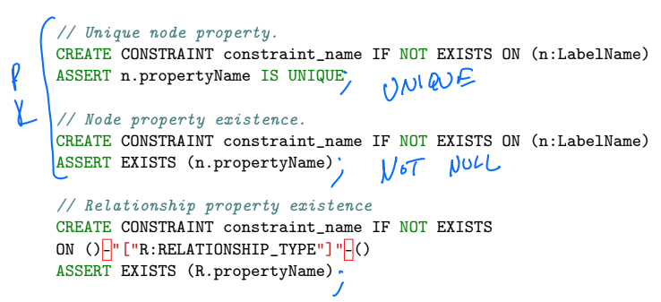

NoSQL Definition
- NoSQL refers to two separate concepts
-
- a database system where the DML and DDL is something other than SQL
-
- a database system that does not use the relational model, e.g. document stores, graph db, key-value stores
- most NoSQL DBs are distributed
- makes use of replication and sharding
- usually sharded and each shard is replicated
CAP Theorem

- consistency is about up to date data
- system blocks (waits) for the correct data, and if can't get it then throw error
- good for DBs
- but not important for apps like social media
- availability means you always an immediate answer
- but might not be the correct answer
- often used inccorectly
- not usually correct to say "mongoDB is CP/AP"
- depends on config!
- determined by how system behaves during a netowrk partition even (P) where parts of system cannot communicate with another
- sacrifice avail or consistency?
NoSQL Data Models
- 
- key-value stores - a database that implements a hash table
- Redis is the most popular key-value store
- stands for REmote DIctionary Server
- 
- Redis usually operates in single node config
- CAP doesn't apply since not distributed
- but has cluster configs (some in AP some in CP)
- uses cases include:
- session caching (big one)
- message queues
- leaderboards
- fast lookup and indexing
- columnar datastore
- similar to relational model except each row can have different numbers of columns
- i.e. fixed # of columns but each row may only use a subset of them
- adding columns is easy
- popular columnar stores
- DuckDB - OLAP DB
- HBase - based on MapReduced
- can store any kind of data
- designed for data lakes and analytics
- CP - need consistent reads/writes
- Cassandra - requires specific structure
- designed for always-on operation (e.g. powering web/mobile apps)
- every node is equal (no master/workers)
- gossip protocol - every node passes messages to each other
- guarantees eventual consistency
- each row has a key and series of columns
- each column has name, value, and timestamp
- set of column names fixed by schema
- each row can have diff columns
- 
- differences from RDBMS
- designed to be unnormalized for fast lookups
- can be used as data warehouses
- no joins or subqueries
- no FK (only PK)
- rows are not ordered in theory (but ordered in practice)
- document store
- system ingests full documents of info in a particular format (JSON/BSON)
- MongoDB is the most popular
- allows user to create multiple DBs
- w/in each DB there can be multiple collections of documents
- documents are schemaless
- documents can be nested in each other (subdocuments)
- documents ⊆ collections ⊆ databases
- example MongoDB query:

- aggregation example:

- to group by multiple fields, use a subdocument
- to group by all fields, use
"_id"=null
- mongoDB vs RDBMS
- mongo has no joins
- lots of redundacy (no concept of normalization)
- all related data remain together
- link to other documents via object IDs, or just subdocuments
- no schema
- data is just big JSON blob
- has internal MapReduce to distribute embarrassingly parallel computations
- mongo's distributed arch
- 
- so by default config, mongo is CP
- ODM (object document models) - is an API that allows users to use functions calls to access a document store
- like an ORM (which is instead for relational models)
- OxMs support CRUD operations
- Create, Read, Update, Delete
- graph stores
- neo4j is the most popular
- 

- Cypher is a querying language (DDL/DML) used for graph stores
- MATCH specifies a node(-relation-node) pattern for pattern matcing
- WHERE is similar to SQL WHERE, but applied to properties of nodes/relationships
- some examples
- neo4j vs RDBMS

- not distributed due to clustering
- as clusters grow we may run out of space on a node, but how to split up cluster and remain efficient?
- CAP does apply bc not distributed
- constraints
- 